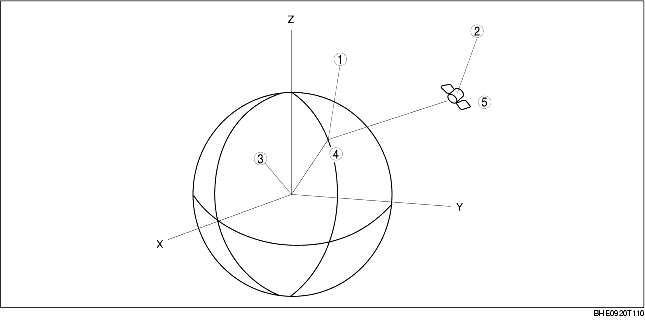

• A vehicle's present position is defined as X0, Y0, and Z0, with the center of the earth being the point of reference. A GPS satellite sends its position (X1, Y1, and Z1) and time T1 when it sends the signal.

.
|
1
|
Position of the vehicle
|
|
2
|
Position of the GPS satellite
|
|
3
|
Center of the earth
|
|
4
|
(X0, Y0, Z0)
|
|
5
|
(X1, Y1, Z1)
|
• The difference between time T0 when the GPS antenna receives the signal and time T1 when the GPS satellite sends the signal is used to estimate distance between the vehicle and the satellite and is represented by the following formula:
• The above formula represents a synchronized navigation unit clock with a GPS satellite clock. However, in fact there is a difference of time T2 between the GPS satellite and navigation unit clocks. The following formula represents the relationship of time T2:
• Four GPS satellite signals producing four of the above formula are required to compute the vehicle's exact position (X0, Y0, and Z0).
• The navigation unit computes three positions (latitude, longitude, and altitude) using radio signals from four or more satellites, called three-dimensional positioning. The more GPS satellite signals received, the more accurate the three-dimensional positioning is performed. The navigation unit can receive a maximum of eight satellite signals to compute a vehicle's position.
• If only three satellite signals can be received, the navigation unit uses two positions (latitude and longitude) and the altitude calculated while in three-dimensional positioning to compute a vehicle's position. This is called two-dimensional positioning.